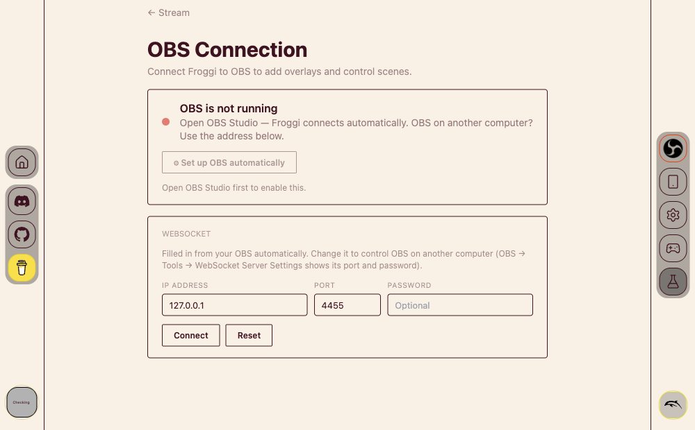
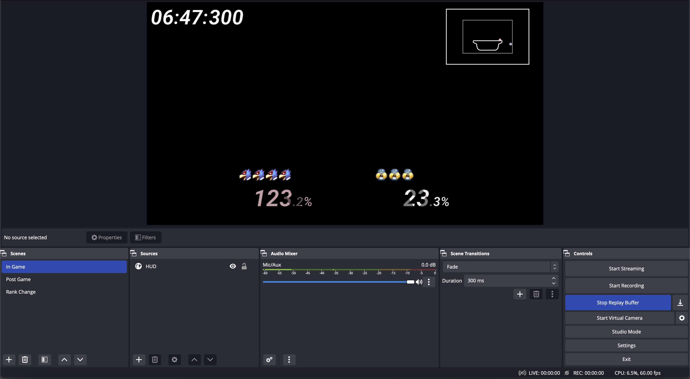
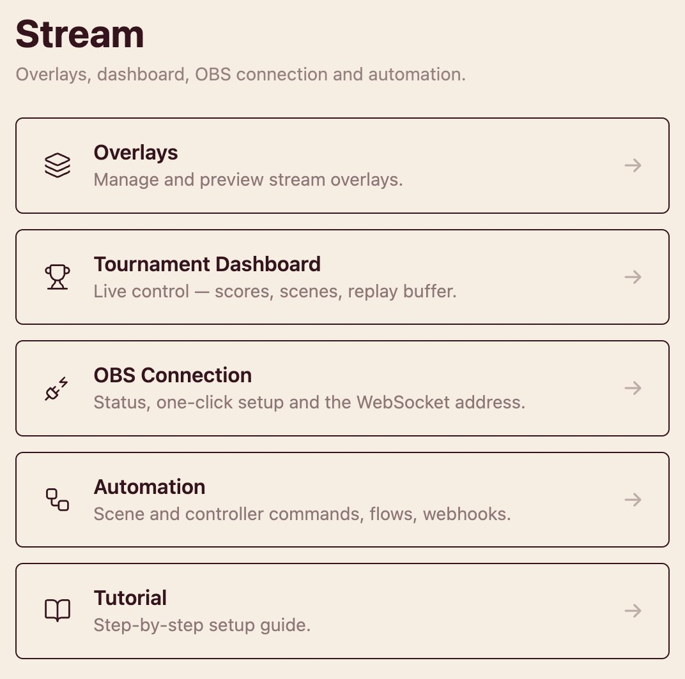

OBS in one click
Adds your overlay and switches scenes by itself.



What it gives you
With OBS connected, Froggi and OBS work as one:
- Overlays in one click: Froggi adds them to your OBS scene at the right size.
- OBS follows the game: your game scene when a game starts, a camera scene when it ends.
- OBS on the Dashboard: scenes, sources, volume and the replay buffer, also from your phone.

